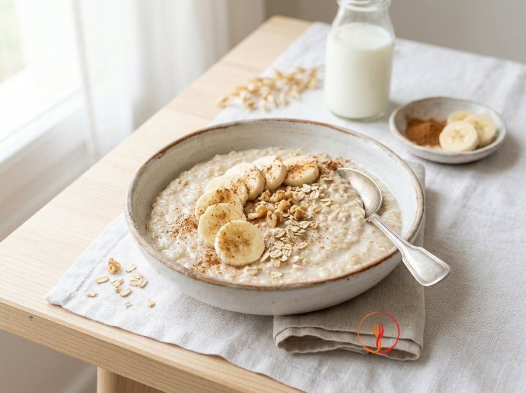

Soft Banana and Cinnamon Porridge
A warm and nutritious breakfast, ideal for starting the day with energy and fibre. The natural sweetness of the ripe banana completely replaces sugar, creating a velvety texture.
Ingredients
- Fine oats80 g
- Whole milk450 ml
- Very ripe banana1 pc
- Ground cinnamon1 pinch
Allergens
Gluten, Milk
Method
- Pour 80g of small rolled oats and 450ml of whole milk into a heavy-bottomed, non-stick saucepan to begin the preparation. Stir well while the ingredients are still cold using a wooden spoon, ensuring the oats start to absorb the liquid evenly before any heat is applied. This initial hydration phase is crucial for preventing the oats from clumping as they warm up. You will end up with a milky, fluid mixture ready to be transformed into a smooth cream. Chef's tip: Always use a heavy-based pan to ensure steady heat distribution and prevent the bottom from scorching.
- Place the saucepan on the hob over a medium-low heat to warm the mixture gradually and gently. Stir continuously, making sure the spoon reaches every part of the pan's base to prevent the starches from sticking. You are aiming to bring the milk to a very gentle simmer, indicated by small bubbles rising to the surface without reaching a vigorous boil. You will notice the comforting aroma of warm milk and cereals beginning to fill the kitchen. Chef's tip: Never leave the hob unattended, as milk can expand and boil over very quickly once it reaches a certain temperature.
- Continue cooking the mixture for approximately 5-7 minutes, keeping the heat very low and stirring regularly. During this time, the oats will release their natural starches, which act as a thickening agent to turn the milk into a soft, velvety cream. The result should be a thick, slightly sticky consistency, a sign that the cereal fibres have softened sufficiently for a child's digestion. The porridge will start to pull away slightly from the sides of the pan as you stir. Chef's tip: If the cream becomes too thick before the time is up, simply add a tablespoon of warm milk to restore its silkiness.
- While the oats finish cooking, take one very ripe banana and peel it, removing any stringy bits. Place it on a flat plate and mash it vigorously with the prongs of a fork until it becomes a completely smooth puree. There should be no large chunks or lumps left, as the consistency must be perfectly safe and pleasant for a little one's palate. The ripe banana will release all its natural sugars, serving as the sole sweetener for the dish. Chef's tip: The more brown spots the banana skin has, the sweeter, creamier, and easier to incorporate into the porridge it will be.
- Incorporate the freshly prepared banana puree directly into the saucepan with the hot oat cream and stir energetically for about 2 minutes. Keep the heat on the lowest setting while working the mixture to allow the fruit's sugars to meld perfectly with the milky base. The porridge will become even richer, taking on a golden beige colour and an extremely velvety texture. You will see that adding the fruit makes the mixture look glossy and homogeneous. Chef's tip: For an even smoother result, you can use a small hand whisk to aerate the mixture as you combine it with the fruit.
- Turn off the heat and sprinkle in a small pinch of ground cinnamon to give the dish a delicate aromatic note. Stir one last time to distribute the spice evenly throughout the volume of the oat cream. Cinnamon not only perfumes the dish but also helps enhance the perception of natural sweetness without the need for refined sugars. The visual result will be an inviting cream with tiny amber specks distributed regularly throughout. Chef's tip: Use high-quality cinnamon, such as the Ceylon variety, which has a sweeter and less pungent flavour, perfect for a child's delicate palate.
- Cover the saucepan with a lid and let the porridge rest for about 3 minutes away from direct heat. During this resting phase, the oats will continue to absorb any residual moisture, stabilising the final thickness of the dish. This step ensures the texture becomes perfect: thick enough to stay on a spoon, yet soft in the mouth. You will notice that after resting, the surface will be less glossy but extremely compact and creamy. Chef's tip: Resting with the lid on prevents a dry skin from forming on the surface, keeping the porridge hydrated and soft.
- Meticulously check the temperature of the porridge by taking a small sample before serving. The ideal temperature should be lukewarm, similar to body temperature, to ensure a safe and pleasant meal for the child. Pour the contents into 4 small bowls, smoothing the surface with the back of a spoon for a neat presentation. The porridge should slide slowly off the spoon, indicating that the cooking and hydration were performed perfectly. Chef's tip: Always test the temperature on the back of your hand or the inside of your wrist, where the skin is most sensitive and reliable.
Nutrition facts (estimate)
| Per serving (160 g) | Per 100 g | |
|---|---|---|
| Energy | 741 kJ / 177 kcal | 463 kJ / 111 kcal |
| Protein | 6.5 g | 4.1 g |
| Carbohydrates | 25.2 g | 15.8 g |
| of which sugars | 9.0 g | 5.6 g |
| Fat | 5.5 g | 3.4 g |
| of which saturates | 2.5 g | 1.6 g |
| Fibre | 2.8 g | 1.8 g |
| Salt | 0.03 g | 0.0 g |
AI estimates based on average CREA / USDA data: indicative only, not a substitute for medical or dietitian advice.
Open the recipe in the app for the shopping list, ingredient sheets and nearby shops.